t of the network captures information from all previous inputs. Additionally, the
function f
t of the network captures information from all previous inputs. Additionally, the
function f in the RNN’s update process
in the RNN’s update process  t = f
t = f (
( t-1,
t-1, t) must represent a time-homogeneous
process.
t) must represent a time-homogeneous
process.
Recurrent neural networks (RNNs) allow cycles in computation graphs. Units may take as input values computed from their own output at an earlier step. This allows the RNN to have internal state or memory.
RNNs can be used as tools for analyzing sequential data, similar to hidden Markov models,
dynamic Bayesian networks, and Kalman filters. RNNs make a Markov assumption: that the
hidden state t of the network captures information from all previous inputs. Additionally, the
function f in the RNN’s update process t = f(t-1,t) must represent a time-homogeneous
process.
If we used a feedforward network to analyze sequential data, the network could examine only a finite-length window of the data, and the network would fail to detect long-distance dependencies. RNNs address this by keeping track of previous inputs in the hidden state.
We will consider a model with an input later  a hidden layer
a hidden layer  with recurrent connections, and an output
layer
with recurrent connections, and an output
layer  . We can define the model using the equations:
. We can define the model using the equations:
 t t | = f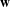( t-1, t-1, t) = 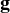z( t) = 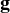z( z,z z,z t-1 + t-1 +  x,z x,z y) ≡ y) ≡ z( z( z,t) z,t) | ||
| ŷt | =  y( y( z,y z,y t) ≡ t) ≡ y(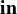y,t) y(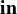y,t) |
Given a sequence of input vectors  1,…,
1,…, T and the observed outputs
T and the observed outputs  1,…,
1,…, T, We can “unroll” the RNN
into a feedforward network. The weight matrices are shared across all time steps. We can calculate
gradients to train the weights using gradient descent, but the sharing of weights makes the computation
a little more complicated. For example, to calculate the gradient for the hidden layer weight
wz,z
T, We can “unroll” the RNN
into a feedforward network. The weight matrices are shared across all time steps. We can calculate
gradients to train the weights using gradient descent, but the sharing of weights makes the computation
a little more complicated. For example, to calculate the gradient for the hidden layer weight
wz,z
| 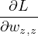 | = ∑ t=1T - 2(y t -ŷt)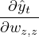 | ||
| = ∑ t=1T - 2(y t -ŷt)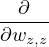gy(iny,t) | |||
| = ∑ t=1T - 2(y t -ŷt)gy′(iny,t)wz,y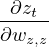 |
We can now calculate the gradient for the hidden unit zt as
Since the contribution to the gradient from time step t is calculated using the contribution from time step t - 1, the algorithm runs in linear time and is called back-propagation through time.
If wz,z > 1, we may experience the exploding gradient problem. This can be mitigated using more elaborate RNN design.
Long short-term memory (LSTM) RNNs are architectures designed to preserve information over many
time steps. The long term memory has a memory cell,  , which is copied from time step to time step. New
information enters the memory by adding updates. LSTMs also include gating units that control the flow of
information.
, which is copied from time step to time step. New
information enters the memory by adding updates. LSTMs also include gating units that control the flow of
information.
The forget gate  determines if each element of the memory cell is remembered or
forgotten.
determines if each element of the memory cell is remembered or
forgotten.
The input gate  determines if each element of the memory cell is updated additively by
new information from the input vector.
determines if each element of the memory cell is updated additively by
new information from the input vector.
The output gate  determines if each element of the memory cell is transferred to the
short-term memory z.
determines if each element of the memory cell is transferred to the
short-term memory z.
Unlike Boolean functions, gates in LSTM are soft. For example, elements of the memory cell will be
partially forgotten if the elements of  are small, but not zero. Values of gating units are always in the range
[0,1] as they are obtained as outputs of a sigmoid function. We can write the update equations for the gating
units as:
are small, but not zero. Values of gating units are always in the range
[0,1] as they are obtained as outputs of a sigmoid function. We can write the update equations for the gating
units as:
| 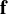t | = σ( x,f x,f t + t +  z,f z,f t-1) t-1) | ||
 t t | = σ( x,i x,i t + t +  z,i z,i t-1) t-1) | ||
| 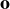t | = σ( x,o x,o t + t +  z,o z,o t-1) t-1) |
The update rules for the memory are given by
| 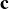t | =  t ⊙ t ⊙ t-1 + 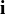t ⊙ tanh(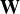x,c t-1 + 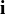t ⊙ tanh(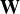x,c t + t +  z,c z,c t-1) t-1) | ||
 t t | =  t ⊙ tanh( t ⊙ tanh( t) t) |
where ⊙ denotes elementwise multiplication.
Supervised learning algorithms are given a training set of inputs and corresponding outputs. Unsupervised
learning algorithms, on the other hand, take a training set of unlabeled examples  . The algorithm might try
to learn new representations, or it might learn a generative model from which new samples can be
generated.
. The algorithm might try
to learn new representations, or it might learn a generative model from which new samples can be
generated.
Suppose we learn a joint model PW( ,
, ) where
) where  is a set of latent, unobserved variables that represent the
content of
is a set of latent, unobserved variables that represent the
content of  in some way. The model can associate
in some way. The model can associate  with
with  however it chooses. The model can achieve both
representation learning (constructing meaningful
however it chooses. The model can achieve both
representation learning (constructing meaningful  from
from  ) and generative modelling (determining
PW(
) and generative modelling (determining
PW( ))
))
In a probabilistic principal component analysis (PPCA),  is chosen from a zero-mean, spherical
Gaussian.
is chosen from a zero-mean, spherical
Gaussian.  is generated from
is generated from  by applying a weight matrix
by applying a weight matrix  and adding spherical Gaussian
noise (with noise parameter σ2). The weights can be learnt by maximizing the likelihood of the
data.
and adding spherical Gaussian
noise (with noise parameter σ2). The weights can be learnt by maximizing the likelihood of the
data.
This can be done by gradient methods, or by an efficient EM algorithm. Once  has been learned, new data
samples can be generated directly from PW(
has been learned, new data
samples can be generated directly from PW( ). Additionally, new observations that have very low
probability can be flagged as potential anomalies.
). Additionally, new observations that have very low
probability can be flagged as potential anomalies.
The dimensionality of  is much less than the dimensionality of
is much less than the dimensionality of  , so the model learns to explain the data in
terms of a small number of features. These features can be extracted for use in classifiers by computing ẑ,
the expectation of PW(
, so the model learns to explain the data in
terms of a small number of features. These features can be extracted for use in classifiers by computing ẑ,
the expectation of PW( |
| ).
).
We can generate data from a PPCA model by sampling  from the Gaussian prior, then sampling
from the Gaussian prior, then sampling  from a
Gaussian with mean 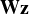.
from a
Gaussian with mean 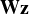.
An autoencoder is a model containing two parts: an encoder that maps from  to a representation ẑ, and a
decoder that maps from ẑ to observed data
to a representation ẑ, and a
decoder that maps from ẑ to observed data  . The model is trained so that
. The model is trained so that  ≈ g(f(
≈ g(f( )), where f is the
encoder function, and g is the decoder function. f and g may be simple linear models, or they can be
represented by a deep neural network.
)), where f is the
encoder function, and g is the decoder function. f and g may be simple linear models, or they can be
represented by a deep neural network.
The linear autoencoder is a simple autoencoder where:
| ẑ | = f( ) = ) =   | ||
 | = g(ẑ) =  ⊤ẑ ⊤ẑ |
This model can be trained by minimizing the squared error. The idea is to train  so that a low-dimensional
ẑ will retain as much information as possible to reconstruct 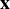.
so that a low-dimensional
ẑ will retain as much information as possible to reconstruct 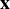.
When  is m-dimensional,
is m-dimensional,  must learn to span the m principal components of the data, which are the m
eigenvectors that have the largest eigenvalues. Thus, the linear autoencoder turns out to be closely
connected to classical PCA.
must learn to span the m principal components of the data, which are the m
eigenvectors that have the largest eigenvalues. Thus, the linear autoencoder turns out to be closely
connected to classical PCA.
The correspondence between classical PCA models and linear autoencoders suggest that there might be a
way to capture more complex kinds of generative models using more complex autoencoders. The
variational autoencoder (VAE) provides one way to do it.The idea is to use a variational posterior Q( )
drawn from a computationally tractable family of distributions as an approximation to the true
posterior.
)
drawn from a computationally tractable family of distributions as an approximation to the true
posterior.
Q is optimized to be “as close as possible” to the true distribution P( |
| ). This is done by minimizing KL
divergence:
). This is done by minimizing KL
divergence:
KL divergence is zero when Q and P conincide, and positive otherwise. We can define the variational lower bound or evidence lower bound (ELBO), 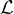 as
Variational learning maximizes in the hope that the solution will be close to maximizing log P( ). We
may rewrite the expression for as
). We
may rewrite the expression for as
For some Q (such as Gaussian distributions), H(Q) can be evaluated analytically. 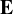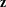~Q log P(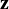, ) can be
estimated using samples of
) can be
estimated using samples of  from Q. P(
from Q. P( ,
, ) can usually be evaluated efficiently: for example if P is a
Bayes net, then P(
) can usually be evaluated efficiently: for example if P is a
Bayes net, then P( ,
, ) is just a product of conditional probabilities.
) is just a product of conditional probabilities.
An autoregressive model is one in which each element of the data vector is predicted based on other
elements of the vector. If  is of fixed size, an AR model can be thought of as a fully observable and
possibly fully connected Bayes net. This makes it easy to calculate the likelihood of a given data vector, and
to predict the value of a simple missing variable, given all others.
is of fixed size, an AR model can be thought of as a fully observable and
possibly fully connected Bayes net. This makes it easy to calculate the likelihood of a given data vector, and
to predict the value of a simple missing variable, given all others.
AR models are commonly used in the analysis of time series data, where an AR model of order k predicts xt given xt-k,…,xt-1. Hence, an n-gram model is an AR model of order n - 1.
In classical AR models, the conditional distribution P(xt|xt-k,…,xt-1) is a linear Gaussian model with a fixed variance whose mean is a weighted linear combination of xt-k,…,xt-1, i.e., a standard linear regression model. The maximum likelihood is given by the Yule-Walker equations.
A deep autoregressive model is one in which the linear Gaussian model is replaced by an arbitrary deep network with a suitable output layer. Recent applications of deep autoregressive models include DeepMind’S WaveNet speech generation model, which implements a nonlinear AR model of order 4800 with a convolutional structure.
A generative adversarial network (GAN) is a pair of networks: a generator which maps values from  to
to
 to produce samples from PW(
to produce samples from PW( ), and a discriminator, which is a classifier trained to classify
), and a discriminator, which is a classifier trained to classify  as real
(from the training set), or fake (created by the generator). GANs are implicit models, in that samples can be
generated, but probabilities are not available.
as real
(from the training set), or fake (created by the generator). GANs are implicit models, in that samples can be
generated, but probabilities are not available.
The generator of a GAN is closely related to the decoder of a VAE. Both the generator and the discriminator are trained simultaneously. The competition between generator and discriminator can be described using game theory. The idea is that in the equilibrium state, the generator should reproduce the training distribution perfectly, so that the discriminator can’t perform better than random guessing.
GANs have worked particularly well for image-generation tasks.
Translation tasks involves multidimensional data such as images and natural language which have statistical
dependence between the various dimensions. Such data is said to have “rich structure.” Translation
tasks consist of transforming an input  that has rich structure to an output 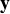 that also has rich
structure.
that has rich structure to an output 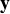 that also has rich
structure.
In supervised translation, the data consists of many ( ,
, ) pairs, and the model maps each
) pairs, and the model maps each  to the
corresponding
to the
corresponding  . Unsupervised translation trains on many
. Unsupervised translation trains on many  and separate
and separate  , but no corresponding (
, but no corresponding ( ,
, )
pairs.
)
pairs.
Most unsupervised translation approaches are based on GANs. The GAN training framework
makes it possible to train a generator that generates any of the possible samples that the the
discriminator accepts as a realistic example of  given
given  , without any need for a specific paired
, without any need for a specific paired
 .
.
In transfer learning, experience with one learned task helps an agent learn better on another task. We may take a network trained for a task A, and update its weights using gradient descent for task B. We may use a smaller learning rate in task B, depending on the similarity of the tasks, and how much data was used in task A.
There are many high-quality pre-trained models available, which has contributed to the popularity of transfer learning. For example, using a pre-trained visual object TODO: AR models recognition model such as ResNet-50 can help with identification of relevant features, thus saving weeks of training time.
If the tasks are very similar, we might also freeze the first few layers of the model as they serve as feature detectors that will be useful for the new model. The later layers are the ones that identify problem-specific features.
In natural language processing, models such as RoBERTa are pre-trained on the vocabulary and syntax of everyday language. Such models can be fine-tuned with domain-specific vocabulary, and trained on task-specific data. For example, a model for answering questions might be trained on question/answer pairs.
The controller for a self-driving car might be trained on a simulator, but in the real world, the environment can vary greatly. The model can be fine-tuned with real-time data from an actual vehicle, and thus it can adapt quickly to the new environment.
Multitask learning is a form of transfer learning in which we simultaneously train a model on multiple objectives. This allows the model to create a “common representation” that reflects similarities between the tasks. For example, a natural language model might be trained simultaneously on part-of-speech tagging, document classification, language detection, word prediction, etc.
Computer vision is the application area which had the biggest impact on deep learning. Deep convolutional networks have been used in handwriting recognition, speech generation, etc.
Deep learning was popularized by the AlexNet image classification system, which managed to achieve an error rate of 15.3% on the ImageNet competition. The model had five convolutional layers, interspersed with max-pooling layers, followed by three fully connected layers. It took advantage of GPUs to speed up the training process.
Since 2012, the top-5 error rate on ImageNet has been reduced to less than 2%. CNNs have been applied in a wide range on visual tasks. Self driving is among the most demanding of visual tasks.
Deep learning has had a huge impact on tasks such as translation and speech recognition. There is the possibility of end-to-end learning and automatic generation of representations for the meanings of words.
In translation tasks, the classical pipeline approach, which corresponds to how a human translator works, is outperfoemd by end-to-end methods. Machine translation systems are approaching human performance for languages pairs such as French and English, which have large paired data sets available.
There is some evidence that networks trained on multiple languages lean an internal meaning representations. For example, learning Portuguese/English and English/Spanish translations have allowed models to perform Portuguese/Spanish translations without any Portuguese/Spanish training pairs.
The representation of words as vectors in a high-dimensional space, known as word embeddings, has shown promise. Because words with similar meanings are used in similar contexts, they end up near each other in the vector space. This allows the network to generalize across categories of words.
In reinforcement learning (RL), an agent learns from a series of reward signals that provide some indication to the quality of its behavior. The goal is to optimize the sum of future rewards. The agent can learn a value function, a Q-function, a policy, and so on.
While the methods of training in RL differ from those of supervised learning, the ability of multilayer computation graphs to represent complex functions over large input spaces has lead to the development of the field of deep reinforcement learning.
The first major demonstration of deep RL was DeepMind’s Atari playing agent, DQN. The agent learnt a Q-function from raw image data, with the reward signal begin the game score. DeepMind’s AlphaGo system also used deep RL to defeat the best human players at the game of Go.
Despite its successes, deep RL still faces significant obstacles. It is often difficult to get good performance, and trained systems may behave very unpredictably if the environment differs even a little from training data.